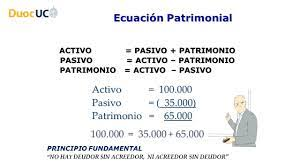
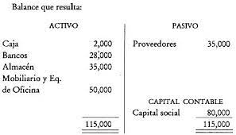

Ciclo Contable
Ecuacion Patrimonial
Representa la relación entre ACTIVOS, PASIVOS Y CAPITAL CONTABLE. De un lado están los activos totales y del otro las fuentes de financiamiento y los derechos legales y económicos sobre los activos (pasivo y capital contable)

Clasicacion de Cuentas
Cuando la empresa alcanza cierto grado de desarrollo, es indispensable que el listado de cuentas del catálogo se clasifique de acuerdo a la naturaleza o tipo de movimiento que se le dará. Dentro de la clasificación de cuentas se tiene
| Cuenta Balance | Cuenta Resultados |
|---|---|
| Activos, Pasivos y Capital Son las que indican parte del patrimonio de la empresa, ya sea de bienes adquiridos o deudas por la compra de bienes. | Son las que describen los ingresos por ventas y salidas de dinero por compras o gastos, para operar o asistir las transacciones de ventas. |
Movimientos de Partida Doble que mantienen la Ecuación Patrimonial
Ejemplos

Capital Contable
- agrupa elementos que se muestran en la ecuación y son: el capital social que representa la aportación de los accionistas y las utilidades retenidas, que representan las utilidades generadas por el negocio y reinvertidas en éste.
- Las utilidades retenidas están integradas por las utilidades de períodos anteriores no repartidas y las utilidades del período actual, disminuidas por los dividendos (utilidades repartidas a los accionistas)